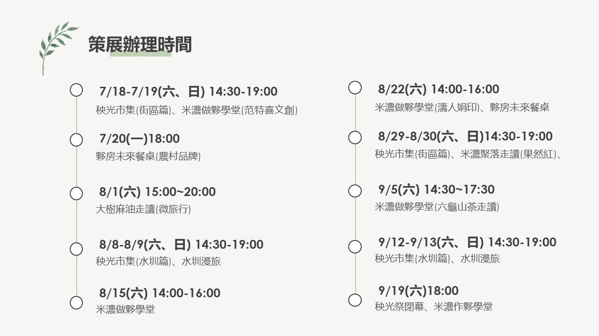

美濃囝仔
一場瀰濃後生仔的尋根之旅
這個舊稱「瀰濃」的小鎮，雲霧繚繞，群山環抱，是它最美的樣子。
團隊裡有幾位成員的成長背景或多或少都跟美濃有一些連結，然而我們對於小鎮的認知，卻只停留在片段中的記憶裡，從滿山遍野的翠綠稻田到高聳入雲間的灰色水泥樓房，成長的過程中逐漸丟失家鄉的樣子，而這份記憶的空白卻無從追尋。
這個夏天，瀰濃的孩子回來了
我們希望能夠為這片土地做點什麼，文化的保留也好、產業的再造抑是，所以我們選擇回歸初心，陪伴正在成長的孩子們，用在地的視角細細感受這片山河孕育的土地，探索屬於我們的記憶，同時告訴孩子們，美濃所告訴我們的故事。
放寮日—給孩子的美濃故事
在美濃的夏天似乎是這樣的，
艷陽高照，偶爾有午後傾盆大雨無預警落下
沖散整個平原的暑氣；
空曠的田野間隱隱有草香浮動，
夜晚時分，燈光稀疏地錯落，蟲鳴唧唧。
這是我們都認識的美濃，
但是除了美景，美濃更美的是文化與故事。
文化的傳承需要不同世代的努力才能流傳
因此我們結合手作體驗
提高小朋友認識家鄉文化的興趣
與當地補習班合作，讓小朋友擁有一個不一樣的暑假。
今年夏天，一起用手認識美濃的文化與故事。
農村活動
我們匯集了農村特色品牌、地方社區發展協會、農村地景風貌，辦理一場屬於美濃聚落的主題祭。
夏天天氣雖然炎熱，但是農村其實是非常適合親子同遊、逛市集、逛老街、走讀旅行、手作體驗，餐桌行動，然而這次秧光祭，通通呈現給到美濃來的遊客們，讓大家體驗一場屬於美濃的盛夏饗宴。
美濃秧光祭不單單只是一場活動，而是挖掘地方產業脈絡後，以策展的方式進行，內容包含5場對談、4場市集、2場餐桌、4場散策走讀，透過地方行動累積，打造屬於農村的夏天。
蒔秧苗長期關注美濃永安聚落的發展及想像，透過地方文化，產業整合，發起為期二個月，每週六的盛夏祭典，今年度地方品牌發起的秧光祭，期許未來也成為地方文化祭典的開端。
永安聚落是美濃曾經繁華的街區，也是開庄的第一條老街，街上店家交易販賣興盛，但因為時代的轉換，如今已經成為美濃人生活的街區，希望友善市集結合特色品牌、社區參與、街區活化行動，找回屬於美濃永安街區的樣貌。
本次號召20家特色品牌進駐到永安老街，有好吃；好玩、好逛的，都在美濃永安老街呈現給你，市集即將進化2.0版本，讓大家看見農村的風格市集。
蒔秧苗辦理市集的初衷，是想要將老街店家串聯，經營街區品牌，透過地方行動，將街區變成友善街區，適合青年創業或農村品牌孵化器，希望能提供高雄旗美九鄉鎮地區的青創品牌或特色小農，能不用跑到外縣市或高雄市區擺攤，在農村也可以有一個很有人情味及創意的市集，透過一次一次地辦理，串連更多不一樣的青年品牌或特色小農進駐到美濃永安下庄百年水圳
美濃永安聚落下庄，百年水圳流域，水圳為美濃人最重要的生活記憶，來到美濃會先見到也是水圳，社區將水圳記憶與藝術結合，打造美濃全新藝術水圳，透過與社區結合藝術共創，將美濃百年水圳藝術再造，讓到來的遊客能夠更深刻理解瀰濃客庄文化。
除了美景，美濃更美的是文化與故事。
文化的傳承需要不同世代的努力才能流傳
因此我們將傳統的藍衫布以及豬籠粄、南瓜粄等傳統客家文化元素結合手作
讓小朋友實際操作與體驗，提高認識家鄉文化的興趣
我們與當地補習班合作，舉辦兩場放寮日，讓小朋友擁有一個不一樣的暑假。
今年夏天，一起用手認識美濃的文化與故事。
秧光祭活動時程

{kind=link}
{kind=link}
{kind=link}